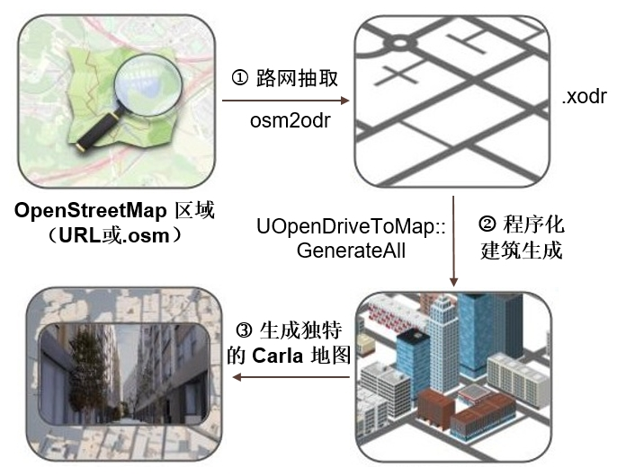
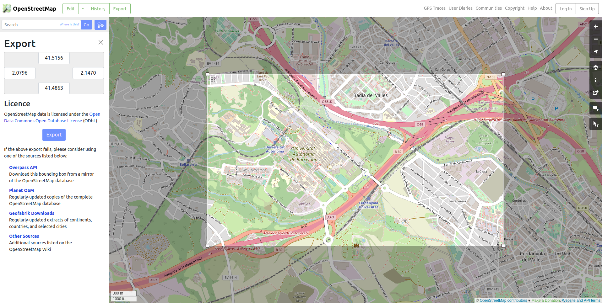
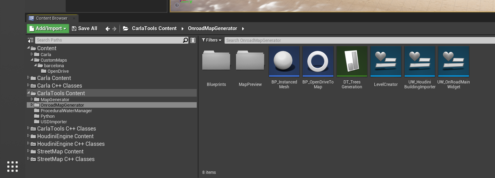

!!! 笔记 数字孪生工具 目前是一项 实验性功能 ，现阶段尚未考虑投入生产。地图的某些部分可能未装饰或无纹理。因此它只能用于实验研究项目。
数字孪生工具¶

数字孪生工具 能够基于源自 OpenStreetMap (OSM) 服务的道路网络，以程序方式生成独特的三维环境。通过 Carla 虚幻引擎编辑器中的数字孪生工具界面，用户可以从 OSM 选择地图区域并下载道路网络作为新 Carla 地图的基础。然后，该工具用程序生成的三维建筑物填充道路之间的空间，这些建筑物会根据道路布局进行调整，从而创建具有高可变性的真实三维道路环境。
构建 OSM 渲染器 ¶
如果您使用的是 Linux，则可以选择使用 Carla 界面中的 OSM 渲染器来导航已下载的大型 OSM 地图区域。您首先需要构建 OSM 渲染器。 在 Carla 根目录中运行 make osmrenderer。 您可能需要将 CMake 版本升级到 v3.2 或更高版本才能正常工作。这将在您的构建目录中创建两个名为 libosmcout-source 和 libosmcout-build 的文件夹。在继续构建 Carla 之前，您需要像这样 在目录中 $CARLA_ROOT/Build/libosmcout-source/maps 编辑文件 Build.sh，以确保找到可执行文件：
if [[ -x ../Import/src/Import ]]; then
importExe=../Import/src/Import
elif [[ -x ../debug/Import/Import ]]; then
importExe=../debug/Import/Import
elif [[ -x ../build/Import/Import ]]; then
importExe=../build/Import/Import
################### Add this line ####################
elif [ -x ../../libosmscout-build/Import/Import ]; then
importExe=../../libosmscout-build/Import/Import
#######################################################
else
echo "Cannot find Import executable!"
exit 1
fi
然后继续按正常方式构建 Carla。Windows 用户无法选择使用 OSM 渲染器，必须直接使用 URL。
下载并准备 OSM 地图数据 ¶

在网络浏览器中，转到 OpenStreetMap 网站 并选择您要使用的地图区域。定义您的区域，然后将数据导出为 .osm 文件，或者您可以使用 URL，如下所述。或者，您可以使用基于 OpenStreetMap 服务的其他工具（例如 GeoFabrik ，它允许从 OSM 数据中提取特定的地图区域（例如州或领地）。
有两种方法可以使用 OSM 数据。使用 URL 或下载 OSM 文件：
使用 URL¶
在 OpenStreetMap 网站 中，导航到感兴趣的区域，然后按 Export，您可能还想使用 Manually select a different area 选项。然后，右键单击 Overpass API 并从上下文菜单中选择 Copy link。 您必须确保文件不大于 1 GB。获取此链接并将其粘贴到界面的 URL 字段中。
下载 OSM 文件并在界面中导航¶
此选项仅适用于 Linux 用户。您可以下载更大区域的地图，例如整个州或领地，然后使用 Carla 中的 OSM 界面，使用箭头和缩放按钮导航地图。将所需的 OSM 数据区域下载为.osm文件。 然后将此文件放入 {CARLA_ROOT}/Build/libosmcout-source/maps/ 文件夹中。打开此文件夹内的终端并运行以下命令：
cd {CARLA_ROOT}/Build/libosmcout-source/maps/
./build.sh <path_to_osm_file>
!!! 笔记 如果 OpenStreetMap 中的地图有错误或不精确，可以通过编辑地图进行改进。
OpenStreetMap 浏览器 ¶
如果左下角的“内容浏览器”未看到“Carla内容”，到中间下面的“视图选项”中选中“显示插件内容”
要打开 OSM 浏览器，请打开内容浏览器并导航至 CarlaTools内容/OnroadMapGenerator。右键单击 UW_OnRoadMainWidget 并从上下文菜单中选择 运行编辑工具空间（Launch Editor Utility Widget） 。这将打开该工具的界面。

该界面允许浏览已从 OSM 数据库下载并烘焙的 OSM 地图区域。首先，您应该在界面的 Select OSM Database 字段中输入上一步中存储处理后的 OSM 数据的目录位置。如果您直接使用 URL，请将其粘贴到 OSM URL 字段中，在这种情况下您将无法使用导航器。

使用方向箭头和缩放图标导航地图并找到要转换为 Carla 地图的道路网的一部分。您在预览中看到的方形区域将是地图的范围。在字段中输入适当的名称 File Name 然后按 Generate 开始程序生成过程。地图生成过程可能需要几分钟，如果您使用的是大区域，则可能需要更长的时间。
先启动Carla服务，然后运行以下脚本从.osm文件中加载场景：
python src/util/config.py -x *.xodr
程序化场景生成 ¶
道路装饰 ¶
该工具从 OSM 数据中提取道路网络作为地图的基础。路面装饰有逼真的表面不规则性、道路纹理和车道线、裂痕和轮胎印迹。

建筑物 ¶
道路之间的空白区域填充有建筑物或开放区域，它们会调整其形状和尺寸以填充道路之间的空间。

程序生成工具从 OSM 数据中提取建筑物占地面积和高度信息，以生成具有相似尺寸的虚拟建筑物。详细的覆层用于模拟窗户、门和阳台。根据建筑面积的不同，采用不同的装修风格，最高的建筑为办公风格，较小的建筑根据建筑占地面积采用商业或住宅风格。

在下一步中还将植被添加到人行道中以获取更多细节。
 数字孪生工具构建风格
数字孪生工具构建风格
建筑物的风格多种多样，随机分布在整个城市，一个区域的建筑风格是根据从 OSM 数据中提取的建筑物的特征尺寸来选择的。
生成地图 ¶
对于 2x2 km2 区域，生成步骤大约需要 10 分钟，较大的区域将需要更长的时间。生成过程完成后，您可以在虚幻引擎编辑器中检查三维地图。
保存地图 ¶
如果您对生成的地图感到满意，则可以按 Save Map 按钮保存地图。 此步骤将花费大量时间，可能需要一个多小时，也可能需要几个小时。完成此步骤后，您应该准备让计算机运行几个小时。完成此步骤后，将可以通过虚幻引擎编辑器或通过 Carla API 使用该地图，就像任何其他地图一样。
后续步骤 ¶
添加光源（天光）、路线规划器 、构建场景。
分析 ¶
UOpenDriveToMap::GenerateTile()生成每一个瓦片，调用GenerateAll()函数，进行 道路网格、车道线、生成点、地形、数目位置、生成完成等步骤。
问题 ¶
carla\Unreal\CarlaUE4\Plugins\CarlaTools\Source\CarlaTools\Private\OpenDriveToMap.cpp改为生成一个瓦片地图的函数，生成后的名字为{NAME}_Tile_0_0。
// ExecuteTileCommandlet();
GenerateTile();
Unreal\CarlaUE4\Plugins\CarlaTools\Source\CarlaTools\Private\Commandlet\GenerateTileCommandlet.cpp。
移除void UOpenDriveToMap::GenerateTile()函数中的// RemoveFromRoot();语句，该语句清理FilePath变量导致下一次瓦片生成时FilePath变量乱码的问题，可以解决大地图只生成一个瓦片的问题。
参考：UE 中的 Commandlet 解读。